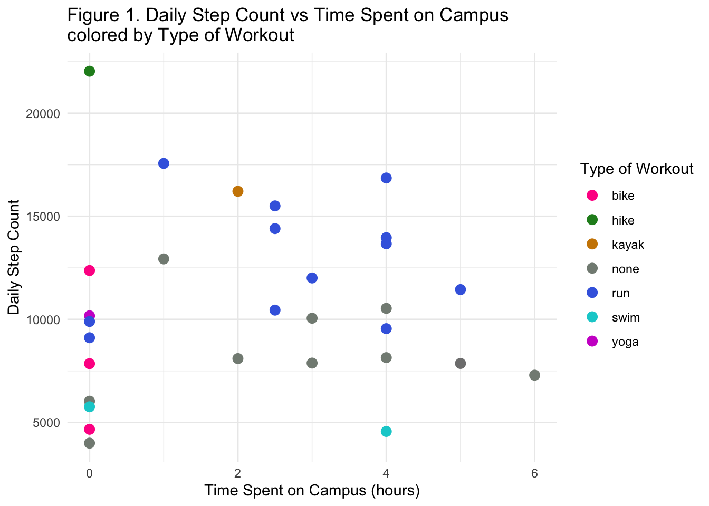
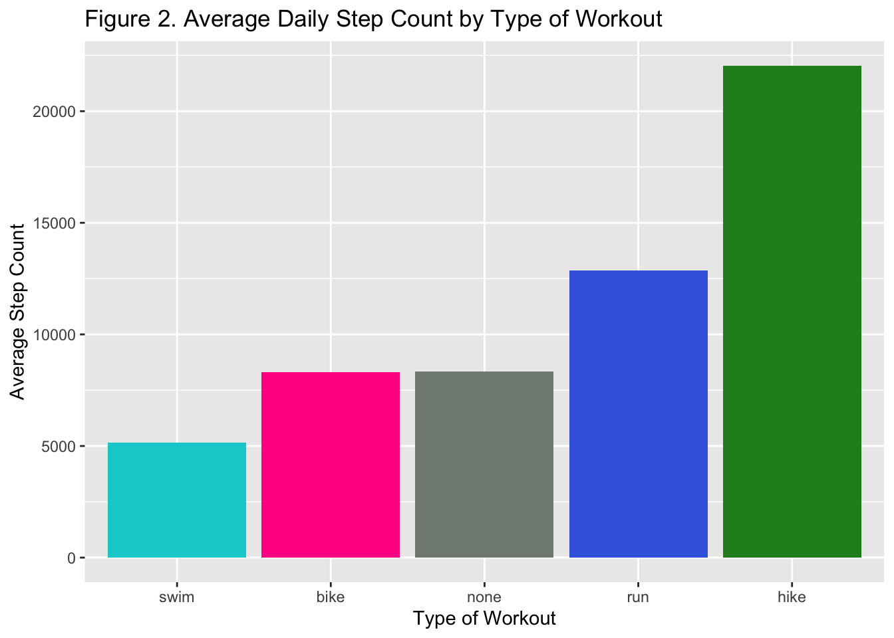
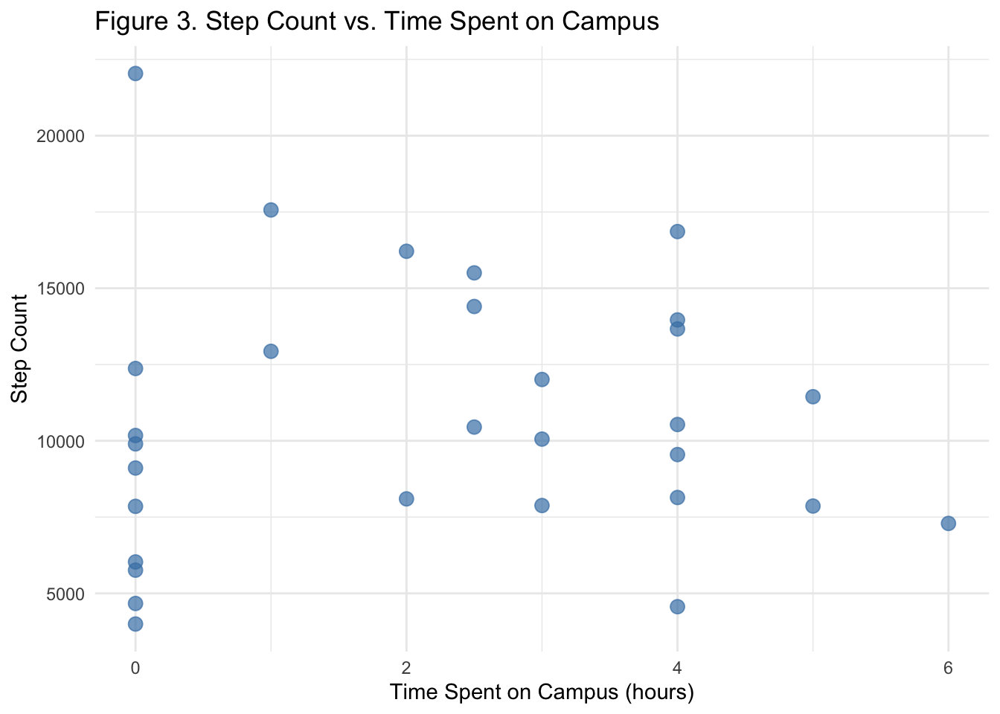
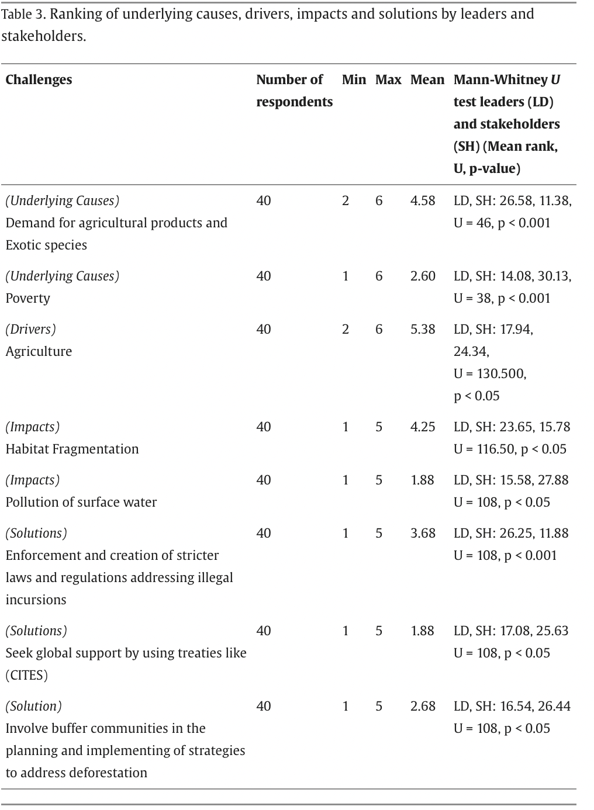
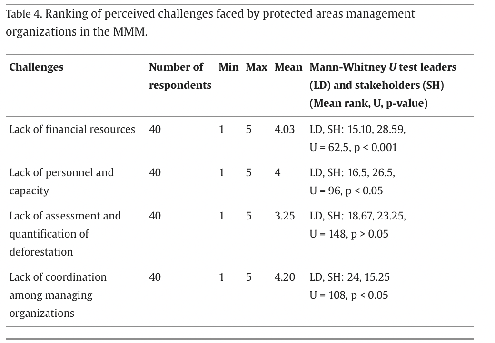

#reading in packages
library(tidyverse)
library(here)
library(flextable)
library(janitor)
library(ggplot2)
personal_data <- read.csv(here("data", "ENVS-193DS_personal_data.csv")) #reading in file and saving as objecthomework 3
link: https://github.com/chloecarlstrom/ENVS-193DS_homework-03.git
Problem 1. Personal Data
a. Data Summarizing
For comparing time spent on campus/in class to daily step count, I could compare means of both groups to see if there is a correlation between the two variables. I would also want to compare the categorical variable of “type of workout” against step count to see if a particular workout type is correlated with higher step counts. Then to combine the two concepts I would also want to look if there is any relation between type of workout and the average amount of time spent on campus, for example if I spent less time on campus and in class, am I more likely to workout and/or have a higher step count.
b. Visualization
ggplot(data = personal_data, aes(x = time_spent_on_campus, y = step_count, color = type_of_workout)) + #plot of time spent on campus and step count, including type of workout
geom_point(size = 3) +
scale_color_manual(values = c(run = "royalblue", bike = "deeppink", none = "honeydew4", swim = "darkturquoise", yoga = "magenta3",kayak = "orange3", hike = "forestgreen" )) + #coloring by type of workout
labs( #changing titles
title = "Figure 1. Daily Step Count vs Time Spent on Campus \ncolored by Type of Workout",
x = "Time Spent on Campus (hours)",
y = "Daily Step Count",
color = "Type of Workout"
) +
theme_minimal()
c. Caption
Figure 1. shows daily step count (y-axis) compared to time spent on campus (x-axis) colored by type of workout. From this graph, we can see that higher step counts are often correlated with run as type of workout and that there may be slight correlation between decreasing time on campus and increasing step count. It also shows that workouts such as biking usually occur on days where I spent less or no time on campus which is likely due to these workouts being longer in duration.
#plot of average step count grouped by workout
personal_data %>% #data frame
filter(type_of_workout %in% c("run","bike", "swim", "hike", "none")) %>% #filtering workouts
group_by(type_of_workout) %>% #grouping by type of workout
summarise(avg_steps = mean(step_count, na.rm = TRUE)) %>% #taking average of step count
ggplot(aes(x = reorder(type_of_workout, avg_steps), y = avg_steps, fill = type_of_workout)) + #creating axes and fill
geom_col() + #bar plot
scale_fill_manual(values = c( #changing colors
"run" = "royalblue",
"bike" = "deeppink",
"none" = "honeydew4",
"hike" = "forestgreen",
"swim" = "darkturquoise"
)) +
labs( #changing titles
title = "Figure 2. Average Daily Step Count by Type of Workout",
x = "Type of Workout",
y = "Average Step Count"
) +
theme(legend.position = "none") #removing legend
c. Caption
Figure 2. shows average daily step count grouped by type of workout. This demonstrates that average step count is highest on days where I run or hike and lowest when I swim or bike.
ggplot(personal_data, aes(x = time_spent_on_campus, y = step_count)) + #plot of time spent on campus and step count
geom_point(color = "steelblue", size = 3, alpha = 0.7) + #scatterplot
labs( #changing titles
title = "Figure 3. Step Count vs. Time Spent on Campus",
x = "Time Spent on Campus (hours)",
y = "Step Count"
) +
theme_minimal()
c. Caption
Figure 3. This visualizes daily step count compared to time spent on campus. From this we can see a possible negative correlation between step count and time spent on campus although there are a significant portion of days with low step counts and no time spent on campus.
d. Table
grouped_summary <- personal_data %>% #summarizing step count statistics by type of workout
group_by(type_of_workout) %>% #grouping by workout
summarise( #adding summary statistics
Min = min(step_count, na.rm = TRUE),
Q1 = quantile(step_count, 0.25, na.rm = TRUE),
Median = median(step_count, na.rm = TRUE),
Mean = mean(step_count, na.rm = TRUE),
Q3 = quantile(step_count, 0.75, na.rm = TRUE),
Max = max(step_count, na.rm = TRUE),
SD = sd(step_count, na.rm = TRUE),
N = n(),
.groups = "drop"
)overall_summary <- personal_data %>% #summarizing overall step count statistics
summarise( #summary statistics
type_of_workout = "Overall",
Min = min(step_count, na.rm = TRUE),
Q1 = quantile(step_count, 0.25, na.rm = TRUE),
Median = median(step_count, na.rm = TRUE),
Mean = mean(step_count, na.rm = TRUE),
Q3 = quantile(step_count, 0.75, na.rm = TRUE),
Max = max(step_count, na.rm = TRUE),
SD = sd(step_count, na.rm = TRUE),
N = n()
)summary_table <- bind_rows(grouped_summary, overall_summary) %>% #grouping summaries together
mutate(across(where(is.numeric), ~ round(., 1))) # rounding to one decimalft <- summary_table %>%
flextable() %>%
set_caption("Table: Summary Statistics for Step Count by Type of Workout") %>%
set_header_labels(type_of_workout = "Type of Workout") %>% # Clean column name
bold(i = nrow(summary_table), bold = TRUE) %>% # Bold the overall row
hline(i = nrow(summary_table)) %>% # Horizontal line above
autofit()
ftType of Workout | Min | Q1 | Median | Mean | Q3 | Max | SD | N |
|---|---|---|---|---|---|---|---|---|
bike | 4,668 | 6,260.0 | 7,852.0 | 8,296.7 | 10,111.0 | 12,370 | 3,870.2 | 3 |
hike | 22,038 | 22,038.0 | 22,038.0 | 22,038.0 | 22,038.0 | 22,038 | 1 | |
kayak | 16,212 | 16,212.0 | 16,212.0 | 16,212.0 | 16,212.0 | 16,212 | 1 | |
none | 3,995 | 7,292.0 | 8,097.0 | 8,328.7 | 10,056.0 | 12,933 | 2,609.5 | 9 |
run | 9,108 | 10,312.2 | 12,838.0 | 12,868.2 | 14,677.5 | 17,566 | 2,887.3 | 12 |
swim | 4,563 | 4,862.2 | 5,161.5 | 5,161.5 | 5,460.8 | 5,760 | 846.4 | 2 |
swim, bike | 7,862 | 7,862.0 | 7,862.0 | 7,862.0 | 7,862.0 | 7,862 | 1 | |
yoga | 10,174 | 10,174.0 | 10,174.0 | 10,174.0 | 10,174.0 | 10,174 | 1 | |
Overall | 3,995 | 7,866.2 | 10,115.0 | 10,695.9 | 13,482.8 | 22,038 | 4,274.3 | 30 |
Problem 2. Affective Visualization
a.Ideas
My initial thoughts for an affective visualization was to include separate icons for each workout type, organization in a weekly or calendar-like format and then distinguish step count possibly by size of icon. Since my data are not all in within the same ranges or have the same units, I would have to figure out a way to relate them without one variable dominating. I could also find a way to plot the data over time since each data point is in correlation with one day.
b. Sketch

c. Draft

d. Artistic Statement
I am showing how my daily step count relates to the time I spend on campus and what type of workout I do each day. I drew inspiration from both Jill Pelto’s paintings where the lines connecting the data points were transformed into a visual artistic piece, and the Dear Data project where multiple elements where combined to create a visualization that showcased each day’s data. I chose to do my visualization using colored pencil. I started with trying to think of a visualization that would be able to include all my variables especially because they are all different (type of variable, units, range, etc.). Since my data has a time component I though it would be interesting to try an depict it as a visual timeline that artistic represented all of my data variables.
Problem 3. Statistical Critique
a. Revisit and Summarize
The authors are using a Mann-Whitney U test to look at various challenges faced by management organizations and see if there was a significant difference between those rankings.
 
b. Visual Clarity
Both tables clearly represent the data underlying tests because they provide a detailed list of each category within the response variable (ranking of challenges) and provide the test statistics to demonstrate whether the results for each challenge were significant. They tables also include helpful summary statistics such as mean and number of respondents.
c. Aesthetic Clarity
The authors did a good job handling “visual clutter” as all the words are nicely spaced out to make the table easier to decipher. The headers are bolded to help clearly distinguish data columns. They also italicized which category each challenge fit into which I think is helpful to the reader.
d. Recommendations
I think they could have italicized/bolded/underlined significant p-values to showcase the important findings of the test. They also could have separated the test statistics into multiple columns to make the results easier to decipher visually. For example, have an individual column for mean rank, U, and p-value.